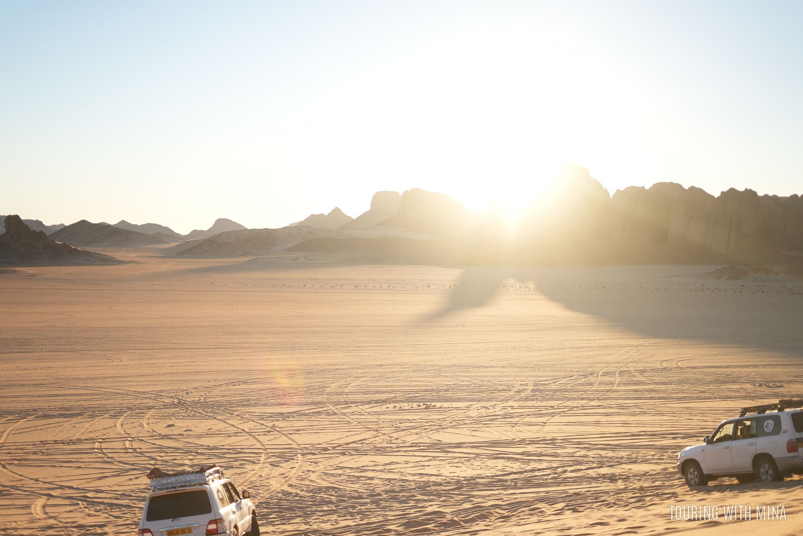
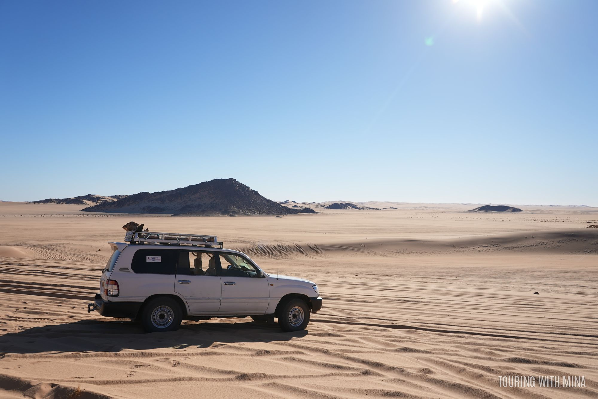
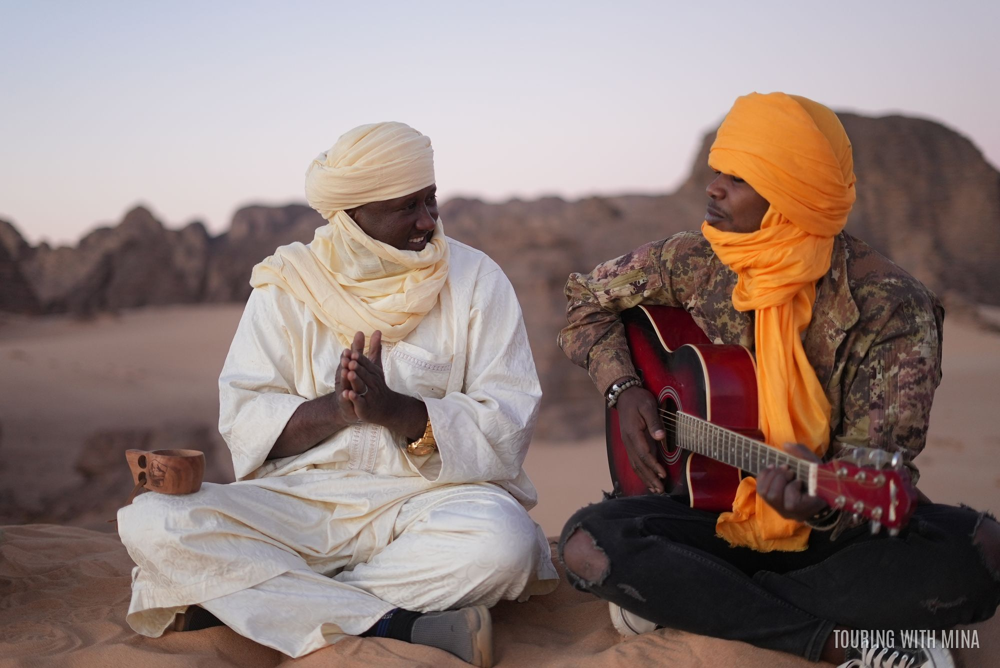
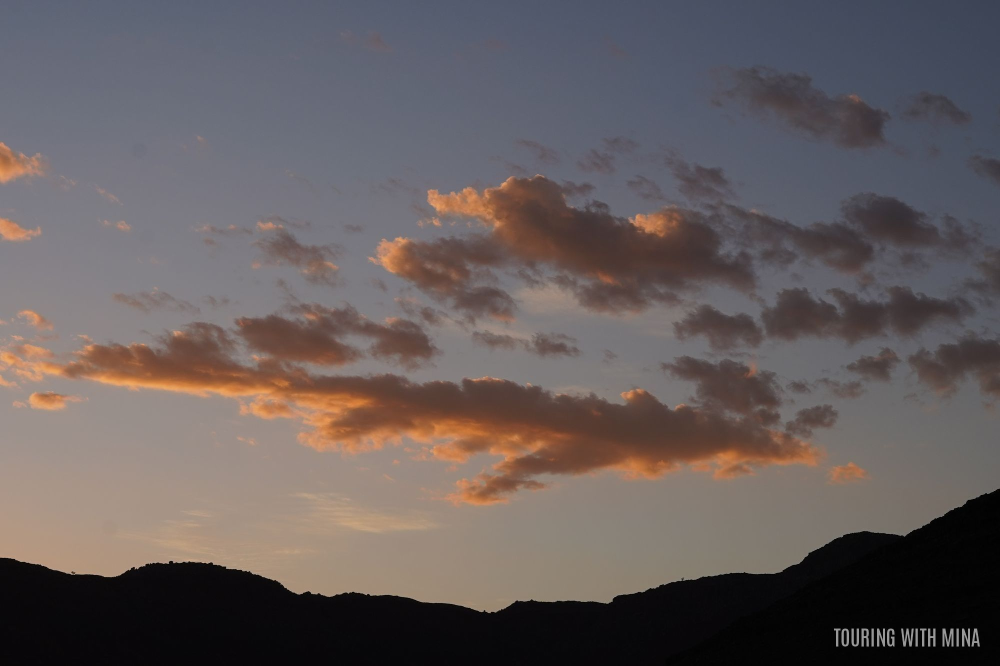

Tea before the sun
The camp wakes up slowly. Tea warms on the embers while the light rises over the dunes.
Touring with Mina, private journeys in the Algerian Sahara
Private journeys in Djanet, led by an Imouhagh team who know every dune and every spring.
90 seconds in the heart of the Tassili
From the sky to the pools of Ihrir, from the dunes to the Sebiba: our trips in ninety seconds.
Watch with soundReady for an unforgettable journey to one of the most enchanting places on earth? We guide you to the heart of the Algerian Sahara, between the Tassili cliffs and the red dunes of the Tadrart.
Our tailor-made trips let you explore breathtaking landscapes, immerse yourself in a rich culture and create memories for a lifetime.
Read our story


The Ihrir oasis, the Issendilène canyon and its guelta, Djanet market and a meeting with Tuareg women.
107,000 DA per personView the tour
The Ihrir tour with an extra day for Adayk, the famous Weeping Cow engraving and the Elephant rock.
118,000 DA per personView the tour
El Birdj, Moul Enaga and Tin Merzouga, the highest dune in Algeria. Algiers-Djanet flights and visa included.
210,000 DA per personView the tour
The Red Tadrart, then a last day in Djanet: the market and the famous Weeping Cow engraving.
225,000 DA per personView the tour
The climb to the plateau with donkeys, the ancient cypresses of Tamaghit and the great frescoes of Sefar, Tin Tazarift and Idjabaren.
Price on requestView the tour
Five days at the pace of the caravan, from Adaik to the Essendilène guelta, then the Erg Admer dunes by 4x4.
Price on requestView the tour
The great crossing: from the Tunisian border to the Tassili through the Grand Erg Oriental, the Red Tadrart and Ihrir, then home on the Algiers-Valencia ferry.
Price on requestView the tour
Your trip to Djanet will be unique: an itinerary built around your preferences and your pace.
View the tourFrom the oasis to the red dunes, each stop has its own character.
Discover the places
Far from cities and screens, the desert offers a calm you no longer find anywhere else. Many travellers say they finally switched off there.

No light for miles: the Milky Way is visible to the naked eye from the camp.

Rock forests, arches, red dunes and canyons, shaped by the wind over millions of years.

The UNESCO-listed paintings and engravings of the Tassili are part of our tours.

Tea, music and stories by the fire: you share daily life with the people who know the desert.

From October to April the days are pleasant and the light is beautiful. The right season to go.
From the first tea to the starry sky, this is the rhythm of a day on the road.
The camp wakes up slowly. Tea warms on the embers while the light rises over the dunes.

The 4x4s leave camp. We stop often: an arch, a trail, a viewpoint only the driver knows.
Lunch is cooked on the spot in the shelter of a rock, then a nap. The desert is also lived standing still.

We climb the dune for sunset. Back at camp, bread bakes in the sand and the guitar comes out.
No light for miles. You fall asleep outside or in your tent, under a sky cities no longer show.
Tindi, taguella baked in the sand, silver jewellery: you live Djanet's culture during the trip.
Discover the cultureFrom booking to the last camp, our team takes care of every detail.

Djanet's landscapes, from ancient rock formations to majestic dunes, with our experienced guides.

Tuareg heritage, traditional rituals and the authentic cuisine of the Sahara.
A 4x4 expedition and nights under the stars, in comfortable tents.
An itinerary built around your preferences and your pace.

Booking, transport and logistics handled with precision and care.

Breakfast, lunch, snack and dinner prepared on site.

“I fell in love with Djanet. I'm here to give you a trip you won't forget.”Mina




Yes. When travelling with a licensed Algerian agency, you can get it on arrival. The file is prepared before you leave. Details are on the Travel info page.
From October to April. From December to February, days are pleasant and nights are cold. Each period is described in When to go.
In a camp, in a tent or under the stars. Mattress, tent, chair and table are provided; bring your sleeping bag. See what to bring.
Yes. Each departure is organised for you, whether you come alone, as a couple, with family or friends. Dates and pace are decided together.
Tell us your dates and wishes. Mina replies personally within 24 hours.